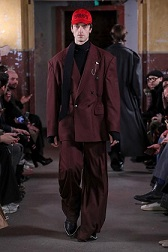

FAVORITE FASHION
ファストファッションが大々的に台頭し、アパレル市場における大きなポジションを占めるようになった近年。
比較的コストを下げ、アパレル産業も大量消費大量生産の時代が当たり前のように日常化した。
特にファストファッションの対局にあるような、ブランドのアパレル商品は大衆向けのポジションではなくなり、一部のファッションに敏感な層や、ファッションが好きな消費者への「個人的趣味」としての側面を強めていった。
さらには、ブランドの商品は売れ残りが激しく、近年その廃棄量が問題となっている。
大手高級ブランドBurberryでは、2017年約2860万ポンド（約41億8000万円）相当の売れ残り商品が破壊・処分された。
こういった訳にもブランドのジレンマが大きく関わっており、Burberryではブランド価値を下げないようにするため、セールを大々的に行わない戦略を取っている。なぜなら、値下げをすることでブランドが大衆化してしまうのを防ぐためだ。
いずれにせよ、こういったブランドが売れにくくなってしまったことが、全ての原因である。
非常に前置きが長くなったが、筆者にとってはファッションが一番の楽しみであり、こういった世界的ブランドが危機的状況にあるのは、放っておけない。

そこで、このサイトでは筆者のお気に入りのブランドを3つ紹介する。それによって少しでも、皆さまがブランドのいい服に興味を持つきっかけになればと思い作成した。
このサイトで紹介する3つのブランドはどれも日本のブランドであり、デザイナーの趣味やルーツが服に反映されている。そういた点も重ねながら、そのブランドごとの代表的なシーズンとともに紹介する。